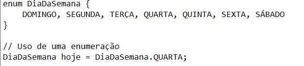

Em programação, enumerações (também conhecidas como enums) são tipos de dados que consistem em um conjunto fixo de valores nomeados. Esses valores são constantes e representam opções ou categorias exclusivas. Enumerações são úteis quando você tem um conjunto limitado de valores que uma variável pode assumir. Aqui estão alguns exemplos com ilustrações de código em diferentes linguagens:
As enumerações são úteis para tornar o código mais legível, manutenível e seguro, uma vez que restringem as opções válidas que uma variável pode ter. Além disso, elas facilitam a compreensão do código, já que os valores são nomeados de forma significativa.